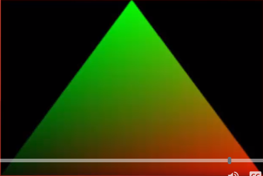
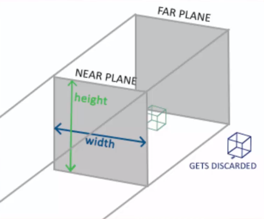
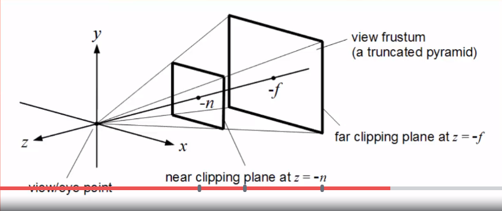
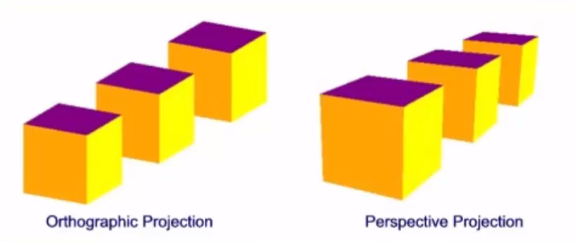

Interpolation Indexed Draws and Projections
Created Sunday 07 June 2020
Interpolation
- Per-vertex attributes passed on are interpolated using the other values on the primitive.
- In other words: A weighted average of the three vertices on a triangle is passed on.
- Fragment Shader picks up the interpolated value and uses that.
- The value is effectively an estimate of what the value should be at that position, had we defined it ourself.
- Classic Example: Using position coordinates as RGB values.
- Top of triangle is green, because in (x, y, z) the y is high.
- Convert to RGB, then G(green) is high.
- Midway between red and green areas, colors blend, but we didn't define that vertex position!
- The value was interpolated.
- Interpolation is used for quickly and accurately estimating values without defining them.
- Can be used for interpolating Texture Coordinates when mapping textures.
- Can be used for interpolating Normal Vectors when handling lighting.
- Especially useful in Phong Shading to create the illusion of smooth/rounded surfaces.

Notice that we only defined the colors of the vertices! The blending inbetween we did not define! The fragment shader interpolates this for us.
Indexed Draws
- Define vertices to draw a cube.
- Cube will consist of 12 triangles (two for each face).
- 12 x 3 vertices per triangle = 36 vertices.
- But a cube only has 8 vertices!
- Some will be defined multiple times, very messy!
- Instead, why not define the 8 vertices of the cube...
- Number them 1 to 8 (or 0 to 7 in C++)...
- And refer to them by their number!
- Just bind them to an Element Array Buffer in the VAO glBindBuffer(GL_ELEMENT_ARRAY_BUFFER, IBO);
- Somethings they're called an Element instead of an Index. They mean the same thing.
- Can still be a bit of a pain...
- Solution: 3D modeling software!
- Load in models (we will do this later in the course).
Projections
- Used to convert from View Space to Clip Space.
- Can be used to give the scene a 3D look.
- Alternatively can be used to create a 2D style for projects that require it.
- Perspective vs orthographic projections (more on that later).
- Need to understand coordinate systems.
Projections: Coordinate Systems
- Local Space: Raw position of each vertex drawn relative to the origin. Multiply by Model Matrix to get... (note the ..., that means we get the following bullet point from that matrix)
- World Space: Position of vertex in the world itself if camera is assumed to be positioned at the origin. Multiply by View Matrix to get...
- View Space: Position of vertex in the world, relative to the camera position and orientation. Multiply by Projection Matrix to get...
- Clip Space: Position of vertex in the world, relative to the camera position and orientation, as viewed in the area not to be clipped from the final output.
- Screen Space: After clipping takes place, the final image is created and placed on the coordinate system of the window itself.
Projections: Continued
- To create Clip Space we define an area (frustum) of what is not to be clipped with a Projection Matrix.
- Two commonly used types of Projection:
- Orthographic (most common in 2D applications)
- Perspective (most common in 3D applications)
Projections: Orthographic
- The frustum for orthographic projections is cuboid.
- Everything between the Far Plane and Near Plane is kept. Rest is discarded.
- Parallel nature of Orthographic means 3D depth is not visible.
- Move object closer/further and it won't change size on screen.

Once again, notice how our frustum consists of 4 parallel lines that make up a sort of rectangular shape. This prevents us from having any real depth to the scene. Despite moving towards and away the green-ish cube, it won't appear to get any larger or smaller. It will appear at a single consistent size. Hence why game engines such as Unity make use of an orthographic camera for making 2D games. Such games are still taking place in 3D space but we can't really see the z-axis due to this orthographic projeciton.
Projections: Perspective
- The frustum for the orthographic projections is a truncated pyramid.
- Each pixel on the Near Plane diverges at an angle to reach a matching point on the Far Plane.
- This gives the illusion of depth!

Projections Comparison
- Orthographic: The one furthest back looks to be the same size as the one at the front, implying it's actually larger.
- Perspective: The one at the back looks smaller than the one at the front, due to it being more distant, as it should.

The above image shows a visual comparison between the two styles of projection.
Projections with GLM and OpenGL
- glm::mat4 proj = glm::perspective(fov, aspect, near far);
- fov = field-of-view, the angle of the frustum
- aspect = aspect ratio of the viewport (usually its width divided by its height).
- near = distance of the near plane.
- far = distance of the far plane.
- Bind the given matrix to a uniform in the shader.
- gl_Position = projection * view * model * vec4(pos, 1.0);
- This is the correct order we want to multiply our matrices by. If we don't, then we'll get a lot of strange effects...
- Also remember that multiplication happens in reverse order than what we're used to!
Summary
- Interpolation calculates weighted values between vertices during rasterization.
- Indexed Draws let us define vertices once then reference them to draw them.
- Projection Matrices convert View Space into Clip Space.
- Orthographic Projections are used for 2D applications and don't allow depth perception.
- Perspective Projections are for 3D applications and create the illusion of depth.
- GLM has the glm::perspective function to create perspective matrices.